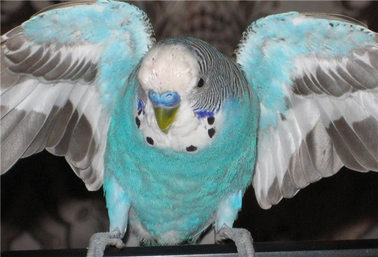
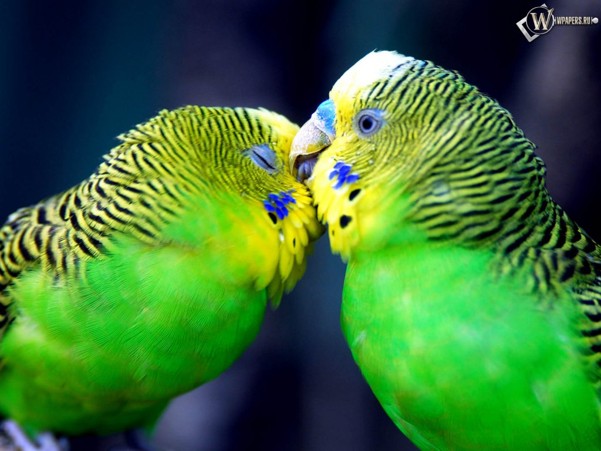

 Когда у Вас появятся волнистые попугаи, Вы забудете обо всем, кроме них, но перед тем как Вы купите попугайчика, Вы должны ознакомится с особенностями их содержания. Продумайте для начала, где будет стоять клетка для попугая и какую клетку лучше приобрести, сколько Времени Вы сможете уделять Вашему питомцу. Конечно лучше всего начать с приручения одного попугайчика. Для содержания дома подходят различные виды попугаев, от высокоинтеллектуальных жако до волнистых попугаев. Все птицы различаются окраской, внешностью, размерами и оперением. У попугаев масса достоинств: подражание человеческой речи, пение, красивое оперение, интеллект. Более того имея пару птиц, вы сможете их разводить, что доставит массу удовольствия и позволит узнать много нового. Если же Вы хотите купить ручную птицу и научить ее разговаривать, то Вы смело можете купить волнистого попугая, не ошибетесь. Это наиболее подходящий выбор для содержания питомца в условиях города. Но нужно помнить, что не все волнистые попугаи одинаково талантливы. В домашних условиях эти попугайчики живут около 15 лет. В неволе хорошо размножаются. Практически это самые маленькие пернатые среди попугаев: длина тела не превышает 18-20 см, вес волнистого попугайчика 40-45 грамм, а размер крыльев не более 9 см. Величиной волнистый попугай немного больше наших воробьев, но из-за длинного хвоста немного кажется длиннее. Эти птички оживляют квартиру, наполняя её мелодичными и радостными звуками.
 Цель этого сайта - помочь новичку правильно выбрать попугая, сделать уход за ним простым и приятным, ответить на многие вопросы, касающиеся попугайчиков и ухода за ними, а также познакомить более опытных любителей с новыми видами и расширить их познания. Если Вы только решили приобрести попугайчика, то прошу ознакомиться с разделами покупка попугаев, выбор клетки. А также, ознакомьтесь с недостатками содержания - возможно, Вы к этому не готовы. Волнистый попугайчик уже очень давно во многих странах привлекал людей своим беззаботным характером и интеллектом. С этой птицей всегда интересно, она может играть с игрушками (зеркало, лесенка, колокольчик и другие), может подражать пению птиц и речи человека. Благодаря особенностям строения клюва, мордашка птицы схожа на лицо человека. Волнистый попугай может стать членом семьи, эту птицу полюбят все ваши домочадцы. Пожилым и одиноким людям. которым не хватает общения, может добавить немного общения говорящий попугай. Дети, при общении с попугаем, будут учится ухаживать на животными, а так же это будет доставлять радость и привьет любовь к животным.